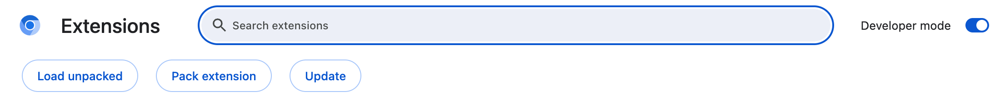
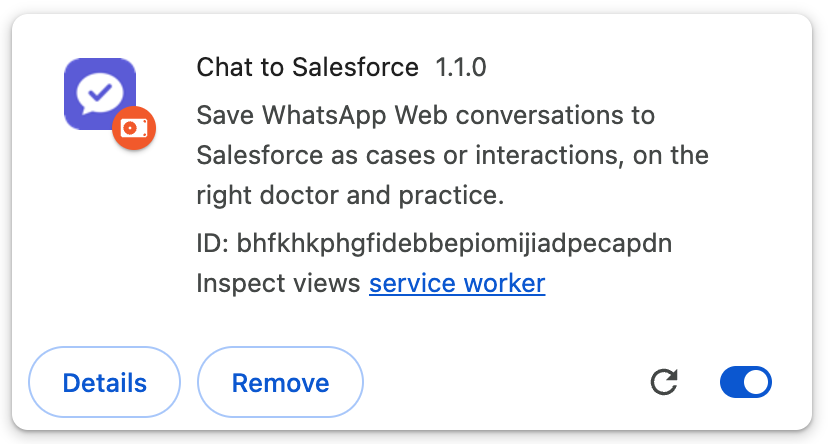

Chat to Salesforce for Chrome
Save WhatsApp Web chats to Salesforce as cases or interactions, from a panel beside the chat: it reads the chat for you. Set up once, about a minute.
Set up once
-
Download the add-on
Download
Open the download: it becomes a folder called Chat to Salesforce add-on. Move that folder to your Documents and keep it there: Chrome runs the add-on from it. (Windows: right-click the download › Extract All first.)
-
Open Chrome's add-ons page
chrome://extensionsPaste it in Chrome's address bar and press Enter (a link cannot open this page).
-
Switch on Developer mode, top right, then click Load unpacked

-
Pick the Chat to Salesforce add-on folder
It is in Documents. Click Select.
-
Pin it
Click the puzzle piece next to Chrome's address bar, then the pin beside Chat to Salesforce. Its purple icon now stays in the toolbar.
Use it
- Open web.whatsapp.com and open a chat
The first time, WhatsApp shows a code: on your phone, WhatsApp › Settings › Linked devices › Link a device.
- Click the purple icon
The panel opens beside the chat. The first time: Connect Salesforce, then Allow.
- Tick the conversation, check what is filled in, save
CX sees Case first, everyone else Interaction; the other is one tap away.
When there is a new version
Download it again, replace the folder in Documents with the new one, then on chrome://extensions press the round arrow on Chat to Salesforce. You stay signed in.

Google Chrome on a computer. On a phone, use the app with WhatsApp's Export chat.